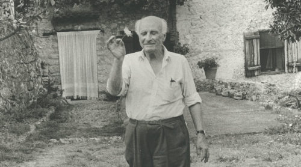

le parti pris des choses premier du nom est une oeuvre littéraire poétique écrite par Francis Ponge, un écrivain français que j'apprécie. le parti pris des choses, second, est le nom que j'ai donné à l'interprétation par YouTube des mots, et donc des choses. Comme tout peut être objet, chaque définition est interprétée par YouTube qui en fait le produit de son service, mon script python travaille ce produit et voilà une chose née. Son parti pris, réinterprété, sonorement.
